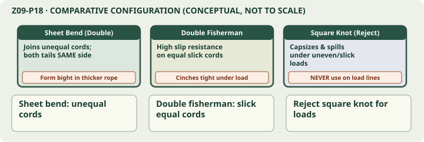

Z09-P18 · Tools and construction · New manuscript
Join two utility cords safely with a sheet bend or double fisherman
Splice two utility lines securely while avoiding the dangerous instability of square (reef) knots under load.
When it applies · Lengthening camp guylines, rigging utility tie-downs or joining two cords of equal or unequal thickness.
Equipment · Two utility cords of known sound condition.

Actions
- Use a sheet bend (or double sheet bend for slick/unequal cords) when joining two ropes of different diameters—form the bight in the thicker stiffer rope and tuck the thinner rope cleanly with both tails emerging on the SAME side.[K09, ED]
- Use a double fisherman's bend (grapevine knot) for joining two similar-diameter slick synthetic utility cords when maximum slip resistance is required, knowing it cinches very tight under heavy load.[K09, ED]
- Never use a square (reef) knot or granny knot to join two load-bearing lines—square knots capsize and spill rapidly when tugged unevenly or tied in unequal/slick ropes.[K09, ED]
Failure recognition · Joining a thin nylon guyline to a thicker utility rope with a square knot, which flips straight open when wind jerks the line.[K09, E16]
Verify · Confirm matching tail orientation on sheet bends, opposing snug barrels on double fisherman's bends and generous tails on both ends.[K09, ED]
Stop or change course · Reject bulky mismatched joins that must pass over rough edges or pulleys; keep all field bends strictly inside utility non-life-safety tasks.[K09]
Evidence and editorial notes
- E16 · NWS · Wind Safety (current web edition)
- Section: Wind Safety > High Wind Hazards · Conditions: Forecast or developing high winds, squalls, or straight-line winds
Support: High winds topple trees, loft debris, and stress lightweight shelters beyond fabric and anchor limits; relocate out of timbered fall zones and into substantial shelter before gusts peak.
Limitations: Tents and tarps lack standardized wind-speed survival guarantees across soil types and pitch angles. · Conflicting evidence: None; avoids unvalidated mph ratings for improvised pitches.
Editorial note: Drives high-wind shelter inspection, guying limits, and abandonment thresholds. · Specialist reviewer: Weather safety and shelter equipment
Primary source · checked 2026-11-24 - K09 · USDA Forest Service · Handtools for Trail Work (0523-2810-MTDC) (agency handbook)
- Section: Cordage, Anchors and Rigging Boundaries · Conditions: Non-life-safety camp lashing, tarps, haul lines and tie-downs
Support: Cordage strength drops significantly at knots, sharp bends, wet fibers, UV exposure and abrasion; inspect fibers before loading and never use unrated camp cord or improvised bindings for life-safety suspension or climbing.
Limitations: No universal breaking strength applies to natural plant fibers or weathered salvaged rope. · Conflicting evidence: Counters folklore claims equating improvised cordage to rated climbing rope.
Editorial note: Separates camp utility lashing/hauling from life-safety rigging. · Specialist reviewer: Rigging safety and materials mechanics
Primary source · checked 2026-11-24
Current assessment · W2C-E004 (2026-11-25) · Open: cited section not found in the source; escalated: Replacement support identified in FM 3-97.61 paras 4-1 to 4-3 (pages 4-1 to 4-3): sharp edges cut nylon rope under tension; leaving rope knotted or tightly stretched reduces strength and life over time; ultraviolet light deteriorates nylon; inspect before and after each use; select rope by task, type, diameter and tensile strength. Limits: No support found for the wet-fiber strength-loss part of K09. FM context is mountaineering rope, not camp cord.
Source lineage · USFS cordage safety; new manuscript · Classification · New manuscript.